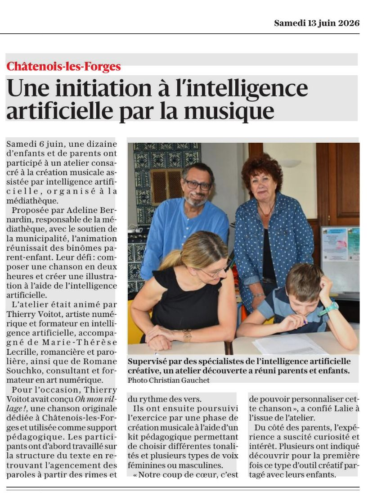
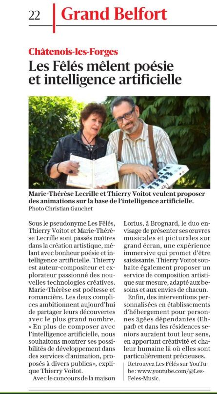
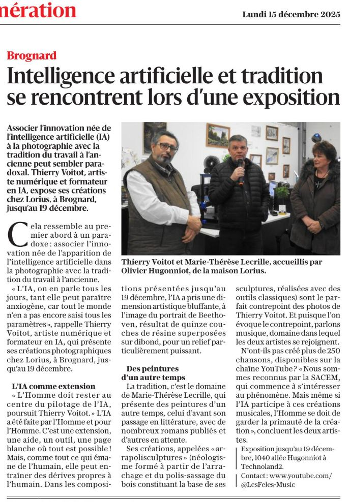
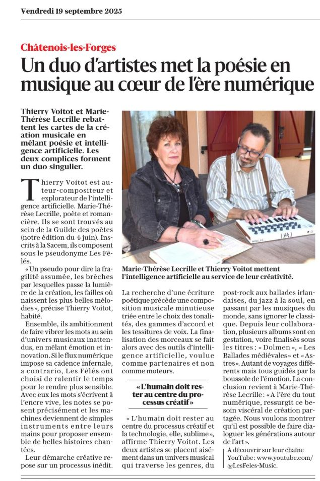
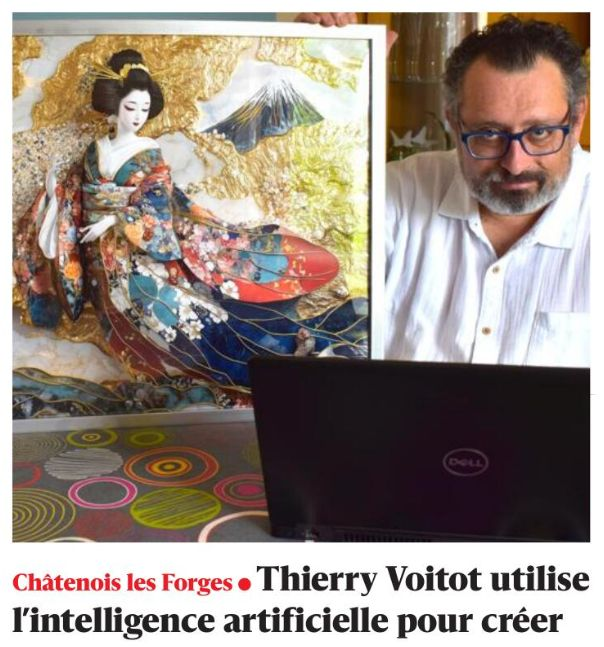
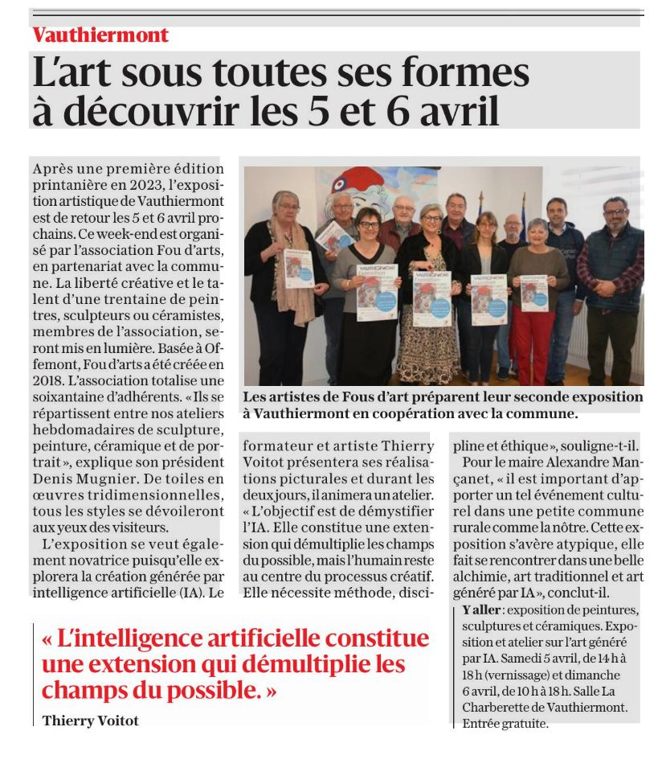
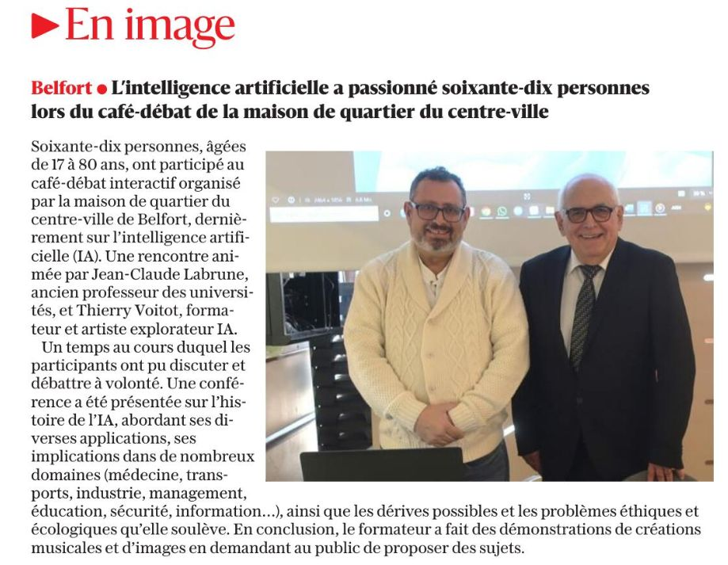
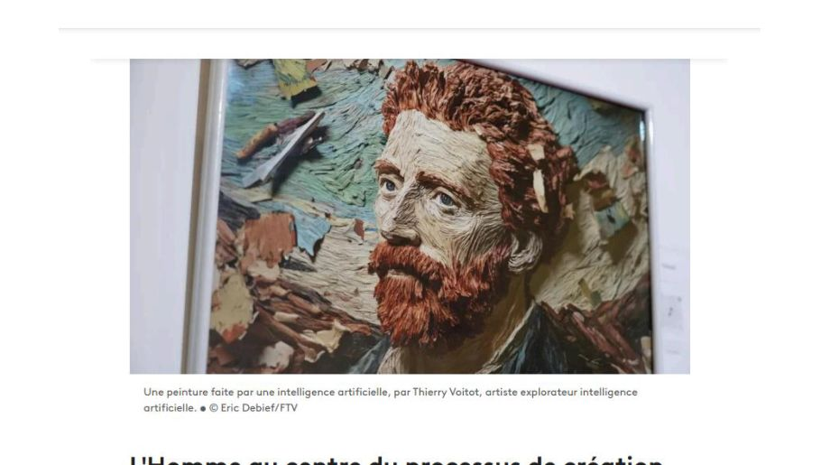
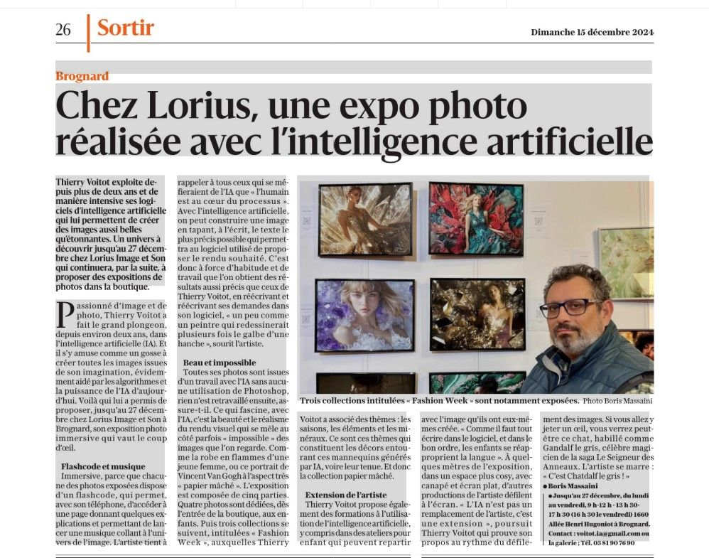

29 & 30 août 2026
24ᵉ Salon des Arts de Sochaux
Avec Marie-Thérèse Lecrille — neuf œuvres exposées. Vernissage le vendredi 28 août à 17h30, salons de l'Hôtel de Ville.
Via Gnosis — Presse & agenda
Ce que la presse en dit, et où nous croiser.
Agenda
Les prochains rendez-vous.
Avec Marie-Thérèse Lecrille — neuf œuvres exposées. Vernissage le vendredi 28 août à 17h30, salons de l'Hôtel de Ville.
Exposition personnelle à l'Hôpital Nord Franche-Comté — trente illustrations en six séries, dans le cadre du dispositif Culture & Santé.
Presse
Ils en ont parlé.
Dix parutions depuis décembre 2024 — expositions, ateliers, portraits. Cliquez sur un article pour le lire en entier.

Atelier parent-enfant à la médiathèque de Châtenois-les-Forges : composer une chanson en deux heures.
Lire l'article
Portrait du duo et de ses projets d'animations et de compositions sur mesure.
Lire l'article
Exposition chez Lorius à Brognard, avec les arrapolisculptures de Marie-Thérèse Lecrille.
Lire l'article
Les Fêlés : écriture poétique, composition méticuleuse, et l'IA comme partenaire.
Lire l'articleUn cercle créatif collaboratif né à Châtenois-les-Forges, à l'initiative de Thierry Voitot.
Lire l'article
Portrait : art numérique, poésie, musique et pédagogie sous le pseudonyme Nova and I.
Lire l'article
Exposition et atelier sur l'art généré par IA, aux côtés d'une trentaine d'artistes.
Lire l'article
Café-débat à la maison de quartier du centre-ville de Belfort, de 17 à 80 ans.
Lire l'article
Reportage sur l'exposition de Brognard : peintures, photos et dessins entièrement créés avec l'IA.
Lire l'article
Exposition immersive à Brognard : flashcodes, musique et collections Fashion Week.
Lire l'articleCrédits photographiques et rédactionnels : L'Est Républicain, France 3 Bourgogne-Franche-Comté. Reproduction avec autorisation.
Journalistes, organisateurs, structures culturelles — écrivons la suite.